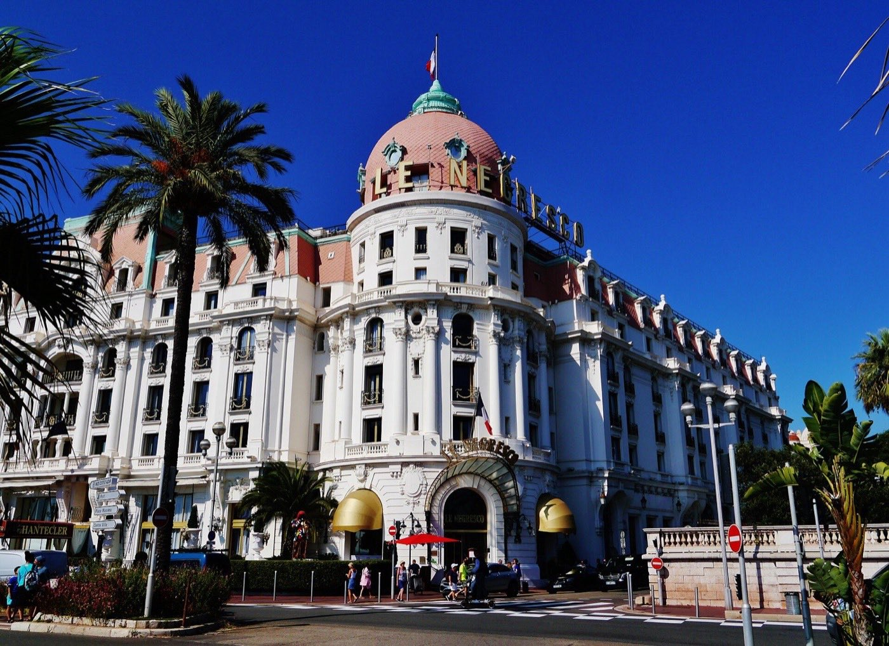
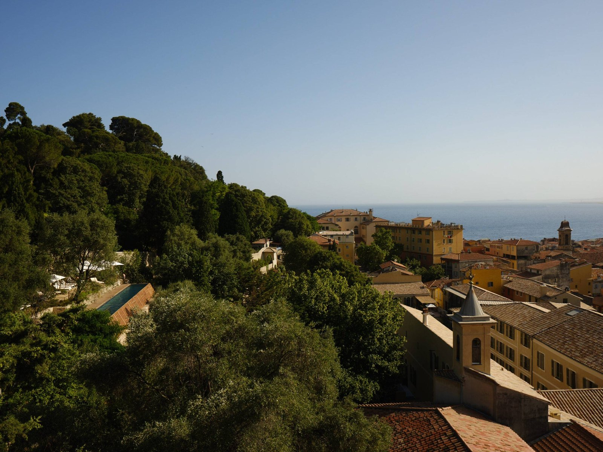
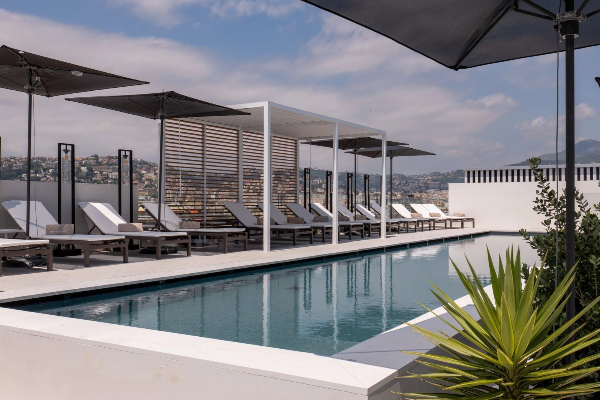

Meilleurs hôtels de luxe à Nice : 8 adresses d'exception en 2026
Du Negresco centenaire aux jardins du Windsor, huit maisons classées par le
score LMHS et l'Indice Azur. Avec, pour chacune, ce que la brochure ne dit pas.
Par Emmanuel Laveran, rédacteur hôtels et gastronomie✺Publié le 10 août 2026✺16 min de lecture

La coupole rose du Negresco, Promenade des Anglais, ouverte en 1913.
Photo : Zairon, CC BY-SA 4.0.
L'essentielTrois adresses, trois façons d'aimer Nice
Hôtel du Couvent (Vieux-Nice), 9,3/10 : ancien couvent du
XVIIe, jardin d'un hectare, parcours thermal antique et silence quasi sacré.
La meilleure note de ce palmarès.
Hôtel Negresco (Promenade), 8,8/10 : l'icône depuis 1913, sa coupole
rose, sa collection d'œuvres et Le Chantecler, étoilé au Michelin.
La Pérouse (colline du Château), 8,0/10 : la plus belle vue sur la
Baie des Anges, Indice Azur 4,6/5, et le meilleur rapport vue-prix de la ville.
Palmarès documentaire. Nous n'avons pas séjourné dans ces huit
maisons pour cette édition, et nous le disons plutôt que de le laisser croire. Tarifs,
capacités et prestations ont été relevés le 10 août 2026 sur les sites officiels.
Les notes du Negresco et de La Pérouse sont reprises à l'identique de notre
palmarès des hôtels de charme de la Côte d'Azur.
Cinq des huit adresses de cette sélection sont classées 5 étoiles, dont deux sur la Promenade des Anglais : une concentration rare sur le littoral azuréen depuis la renaissance du Palais de la Méditerranée. Nous les avons classées selon le Score LMHS sur 10 et l'Indice Azur sur 5, notre indice thématique pour cette page. Du Negresco centenaire aux jardins exotiques du Windsor, voici le palmarès complet.
Notre sélection : les 8 meilleurs hôtels de luxe à Nice en 2026
01

Hôtel du Couvent, le silence au cœur de la ville 9,3/10
À partir de 315 €/nuit, fourchette relevée 300 à 800 €.
Ancien couvent du XVIIe siècle, ressuscité après dix ans de travaux et rouvert en 2024. Architecture épurée (Studio Mumbai, Studio Méditerranée), intérieurs minimalistes signés Festen : tomettes au sol, tons taupe et terreux, silence quasi sacré. 88 chambres sans télévision ni domotique, mais avec marbre, fleurs séchées et savons Fragonard. Jardin d'un hectare planté d'oliviers, de kakis, d'abricotiers et de quatre-vingts espèces d'herbes aromatiques. Couloir de nage de 19 mètres avec vue sur la Baie des Anges, parcours thermal inspiré de l'Antiquité (tepidarium, caldarium, frigidarium). Boulangerie ouverte au public sur place. Le bémol : éloigné de la plage, et peu adapté à qui cherche l'animation. Pour les quêteurs de calme et de bien-être authentique.
88 chambres · Jardin d'un hectare · Parcours thermal · Couloir de nage 19 m ·
Site officiel →
02

Maison Albar Le Victoria, le luxe contemporain 8,9/10
À partir de 260 €/nuit, fourchette relevée 250 à 700 €.
Ouvert le 15 novembre 2024, Le Victoria incarne le luxe urbain contemporain. 102 chambres et 30 suites en blancs, gris et ivoire, touches de bleu azur, boiseries des années 1930, design marin et Art Déco signé Jean-Paul Gomis et Studio MHNA. Le rooftop Taulissa, dont la carte est confiée à Glenn Viel, chef triplement étoilé de Baumanière, offre un panorama à 360 degrés sur la Méditerranée et jusqu'au Mercantour. Le spa ORIA de 650 m² déploie une piscine intérieure en marbre baignée de lumière, sauna, hammam et jacuzzi. Galerie de boutiques de luxe attenante, dans le Carré d'Or. Le bémol : la maison manque encore de patine, et la galerie commerciale peut sembler froide. Pour les couples modernes et les amateurs de design.
132 clés · Rooftop Taulissa · Spa ORIA 650 m² · Ouvert en novembre 2024 ·
Site officiel →
292 à 866 €/nuit, au-delà de 600 € en moyenne haute saison.
Le Negresco incarne l'âme de Nice depuis 1913. Ses 102 chambres et 28 suites respirent le luxe intemporel : collection d'œuvres d'art rares, salons Louis XVI et Napoléon III, tentures de soie et de velours, lustres de cristal Baccarat. La Suite d'Exception Jeanne & Paul (400 m² intérieurs et 200 m² de terrasses) domine la Baie des Anges. Le restaurant Le Chantecler, sous la direction de la cheffe Virginie Basselot, Meilleur Ouvrier de France, est étoilé au Michelin. L'établissement dispose aussi d'un spa avec jacuzzi, sauna et piscine intérieure, ainsi que d'une plage. L'emplacement sur la Promenade est imbattable. Le bémol : insonorisation imparfaite, certaines chambres vieillissantes, rapport qualité-prix discuté. Pour qui cherche l'histoire, le prestige et le charme intemporel.
130 clés · Le Chantecler étoilé · Spa et piscine intérieure · Plage ·
Site officiel →
04
Palais de la Méditerranée, l'Art Déco réinventé 8,7/10
250 à 1 121 €/nuit, la Penthouse Suite de 112 m² avec terrasse de 70 m² au sommet de la fourchette.
Le Palais de la Méditerranée renaît en 2026 sous la bannière The Unbound Collection by Hyatt. Façade Art Déco classée, intérieurs réinventés par Linda Boronkay, ancienne directrice du design de Soho House : lignes courbes, matières raffinées, tons pastel, clins d'œil au patrimoine niçois. 145 chambres et 28 suites, dont onze nouvelles, dominent la Baie des Anges. Le restaurant Zouzou Riviera, confié au chef Sébastien Roux, célèbre la Méditerranée. Piscine intérieure-extérieure chauffée toute l'année, spa de 750 m², 1 700 m² d'espaces événementiels. Service Hyatt professionnel et attentionné. Le bémol : le prix, et des espaces encore en transition après la rénovation. Pour les couples et les événements.
173 clés · Spa 750 m² · Piscine chauffée toute l'année · Façade classée ·
Site officiel →
205 à 350 €/nuit en entrée de gamme, jusqu'à 900 € et plus pour les suites.
Bâtiment historique de 1848 rénové par le studio de David Collins, l'Anantara Plaza conserve sa façade Belle Époque. 151 chambres et suites, certaines avec vue sur la Baie des Anges, balcon ou terrasse. Le spa Anantara de 550 m² est une référence du bien-être asiatique en ville : massages signature, hammam, sauna. Restaurant SEEN by Olivier, du chef Olivier da Costa, cuisine méditerranéenne aux accents brésiliens et thaïlandais, sur un rooftop panoramique. Pâtisseries de Philippe Tayac. Emplacement central, entre la place Masséna, le jardin Albert Ier et la Promenade. Le bémol : moins iconique architecturalement que ses voisins, et un prix élevé. Pour les voyageurs qui viennent d'abord pour le spa.
151 clés · Spa Anantara 550 m² · Rooftop SEEN by Olivier · Façade Belle Époque ·
Site officiel →
141 à 310 €/nuit en entrée de gamme, jusqu'à 800 € en haute saison.
Accrochée à la colline du Château, La Pérouse offre la vue la plus spectaculaire de Nice sur la Baie des Anges, celle que les palaces de la Promenade ne peuvent pas égaler. Une cinquantaine de chambres et suites rénovées en 2023 par Friedmann & Versace. Décor méditerranéen : fresque murale des Céramiques du Beaujolais, mobilier en rotin, tête de lit marine Maison Thevenon, fauteuils à rayures solaires, bar recouvert de coquillages par Caroline Perrin. Citronniers centenaires, piscine chauffée avec vue panoramique, restaurant Le Patio et sa cuisine méditerranéenne. Accès à pied depuis le Vieux-Nice et le cours Saleya. Le bémol : c'est un 4 étoiles, avec moins de services qu'un palace. Meilleur Indice Azur de ce palmarès après le Negresco, et le meilleur rapport vue-prix de la ville.
Une cinquantaine de clés · Piscine chauffée vue mer · Rénovation 2023 ·
Site officiel →
07
Le Beau Rivage, l'histoire en bord de mer 7,8/10
24 rue Saint-François de Paule, 06300 Nice · 4 étoiles · Indice Azur 4,1/5
Fourchette relevée 150 à 1 000 €/nuit selon la saison et la catégorie.
Façade du XIXe siècle, intérieurs contemporains, le Beau Rivage respire l'histoire : Matisse y a peint en 1917, Tchekhov y a séjourné. Plage privée, restaurant Les Galets, emplacement central entre le Vieux-Nice et la Promenade. Charme authentique et service attentionné. Le bémol : un rapport qualité-prix discuté, des tarifs élevés pour un 4 étoiles, et un séjour minimum de trois nuits en haute saison. Pour les voyageurs culturels et romantiques.
Plage privée · Restaurant Les Galets · Matisse y a peint en 1917 ·
Site officiel →
98 à 250 €/nuit, le meilleur ticket d'entrée de ce palmarès.
Le Windsor, Jungle Art Hotel, c'est l'originalité absolue à Nice. Un bâtiment du XIXe siècle, un jardin tropical planté de bambous et d'arbres fruitiers, une oasis en plein centre-ville, et de l'art contemporain partout : 34 chambres décorées chacune par un artiste. Piscine chauffée de mai à octobre, hammam, restaurant Maître Restaurateur, bar ouvert 24 heures sur 24. La Promenade est à cinq minutes à pied. Label Clef Verte pour l'engagement environnemental. Le service personnel est très apprécié. Le bémol : pas de vue mer, moins de services que les 5 étoiles de cette page, et un petit-déjeuner régulièrement critiqué. Pour les voyageurs créatifs et les couples en quête d'originalité.
Classement par Score LMHS. Les notes du Negresco et de La Pérouse sont reprises
à l'identique de notre palmarès des hôtels de charme de
la Côte d'Azur, afin qu'une même adresse ne porte jamais deux notes différentes sur ce site.
Tarifs et prestations relevés le 10 août 2026 sur les sites officiels.
Protocole LMHS : comment nous avons sélectionné ces hôtels
L'Indice Azur, noté sur 5, est un indice thématique propre à cette page. Il synthétise cinq dimensions : vue mer (panorama, accès, qualité visuelle), service (professionnalisme, anticipation, personnalisation), rapport luxe-authenticité (cohérence entre le décor et l'histoire du lieu, absence de pastiche), gastronomie (table, chef, distinctions) et bien-être (spa, piscine, parcours thermal, sérénité).
Le Score LMHS sur 10 évalue la globalité : emplacement, confort, originalité, rapport qualité-prix et avis clients vérifiés. Il relève de la grille LMHS Destination, celle de nos classements par ville.
Ce palmarès est documentaire. Nous n'avons pas effectué de séjour de contrôle dans ces huit maisons pour cette édition, et nous ne prétendons pas le contraire. Tarifs, capacités, prestations et distinctions ont été relevés le 10 août 2026 sur les sites officiels des établissements et auprès du Guide Michelin, et recoupés avec les avis clients vérifiés. Aucun partenariat commercial, aucune affiliation.
Nice, destination de luxe : ce qu'il faut savoir avant de réserver
Nice est la capitale du luxe côtier français. La Promenade des Anglais, sept kilomètres de front de mer, concentre les palaces historiques et les nouveaux 5 étoiles. Trois quartiers, trois séjours différents : la Promenade (hôtels iconiques, plages, animation), le Vieux-Nice (ruelles, tables, colline du Château), les collines (calme, jardins, vue panoramique).
Saisonnalité : juillet et août sont la haute saison, avec des prix de 40 à 50 % supérieurs. Mai, juin et septembre offrent le meilleur compromis, climat et tarifs. De novembre à février, comptez 30 à 40 % de moins, sous un climat doux de 10 à 15 °C. Budget moyen : autour de 400 € la nuit pour un 5 étoiles, 200 € pour un 4 étoiles.
Selon nos relevés 2026, l'Hôtel du Couvent obtient le score le plus élevé, 9,3/10, grâce à son authenticité, son jardin d'un hectare et son parcours thermal unique en ville. Le Negresco (8,8/10) reste l'icône incontestée pour l'histoire, le prestige et l'emplacement. Le choix dépend de votre priorité : le calme et le bien-être au Couvent, le prestige historique au Negresco.
Quel est le palace de Nice ?
Le Negresco, ouvert en 1913, est l'établissement de référence de Nice, avec sa coupole rose et sa façade classée. Depuis 2026, le Palais de la Méditerranée, passé sous la bannière The Unbound Collection by Hyatt, lui dispute ce rang avec sa façade Art Déco réinventée. Précision utile : « palace » est aussi une distinction officielle décernée par Atout France, et aucun hôtel niçois ne la détient en 2026. Les 33 palaces français se répartissent entre Paris, les Alpes, la Côte d'Azur (Antibes, Saint-Jean-Cap-Ferrat, Cannes, Saint-Tropez, Ramatuelle), le Sud-Ouest, la Champagne et les Caraïbes.
Quel hôtel choisir pour une vue mer à Nice ?
La Pérouse offre la meilleure vue sur la Baie des Anges, Indice Azur 4,6/5, à un tarif nettement plus accessible que les palaces. Pour un 5 étoiles avec vue, le Negresco (4,8/5) et le Palais de la Méditerranée (4,5/5) dominent la Promenade. Le rooftop Taulissa de Maison Albar Le Victoria offre pour sa part un panorama à 360 degrés, de la Méditerranée au Mercantour.
Quelle est la meilleure période pour séjourner dans un hôtel de luxe à Nice ?
Mai, juin et septembre offrent le meilleur compromis : climat méditerranéen de 20 à 25 °C, tarifs de 20 à 30 % inférieurs à ceux de juillet-août, et fréquentation réduite. Juillet et août constituent la haute saison, avec des prix supérieurs de 40 à 50 % et des plages bondées. De novembre à février, les tarifs baissent de 30 à 40 % sous un climat doux de 10 à 15 °C, idéal pour un séjour bien-être.
Les hôtels de luxe à Nice ont-ils un spa ?
La plupart, oui. Le Palais de la Méditerranée (750 m²), Maison Albar Le Victoria (spa ORIA, 650 m²), l'Anantara Plaza (550 m²) et l'Hôtel du Couvent (parcours thermal inspiré de l'Antiquité) proposent des espaces complets. Le Negresco dispose également d'un spa, avec jacuzzi, sauna et piscine intérieure. Le Windsor a un hammam. En revanche, La Pérouse et Le Beau Rivage n'ont pas de spa, mais La Pérouse dispose d'une piscine chauffée avec vue et Le Beau Rivage d'une plage privée.
Comment Nice se compare-t-elle à Saint-Tropez pour le luxe hôtelier ?
Nice offre davantage d'établissements 5 étoiles et une bien meilleure accessibilité, avec son aéroport international et ses transports. Saint-Tropez propose une atmosphère plus bohème-chic et plus exclusive, avec moins d'hôtels mais plus d'intimité, et compte des palaces distingués par Atout France dans son golfe, ce que Nice n'a pas. Nice, c'est le prestige urbain et l'histoire ; Saint-Tropez, la discrétion et le glamour. Comparez avec nos meilleurs hôtels de luxe de Saint-Tropez.
Le mot d'EmmanuelNice n'est ni Cannes ni Monaco
Nice m'a toujours fasciné par ce contraste : la Promenade des Anglais, théâtre de prestige et d'histoire, et le Vieux-Nice, village méditerranéen intact à deux cents mètres de là. Les huit maisons de ce palmarès incarnent cette dualité. Le Negresco reste inégalé pour le prestige, l'Hôtel du Couvent pour l'authenticité, La Pérouse pour la vue. Nice n'est ni Cannes ni Monaco : elle est plus authentique, moins étriquée, et c'est pourquoi j'y reviens. Un détail que je note tout de même, et qui dit quelque chose de la ville : aucun hôtel niçois ne détient la distinction Palace d'Atout France, quand le littoral en compte neuf entre Antibes et Ramatuelle. Nice a l'histoire, la vie urbaine et la lumière. Le titre, lui, dort ailleurs sur la côte.
Emmanuel Laveran, rédacteur hôtels et gastronomie
Méthode et sources
8 hôtels niçois classés par le Score LMHS sur 10, issu de la grille LMHS Destination employée dans nos classements par ville, et par l'Indice Azur sur 5, indice thématique propre à cette page (vue mer, service, rapport luxe-authenticité, gastronomie, bien-être). Aucun séjour de contrôle n'a été effectué pour cette édition, et nous ne prétendons pas le contraire. Les notes du Negresco et de La Pérouse sont reprises à l'identique de notre palmarès des hôtels de charme de la Côte d'Azur, afin qu'une même adresse ne porte jamais deux notes différentes sur ce site. Tarifs, capacités, prestations et distinctions relevés le 10 août 2026 sur les sites officiels des établissements, le Guide Michelin et la collection 2026 des Palaces d'Atout France. Aucun partenariat commercial, aucune affiliation. Photographies : Hôtel du Couvent et Maison Albar Le Victoria, sites officiels ; Negresco, Zairon, CC BY-SA 4.0.
8 adressesIndice Azur /5Sans séjour de contrôle0 partenariat